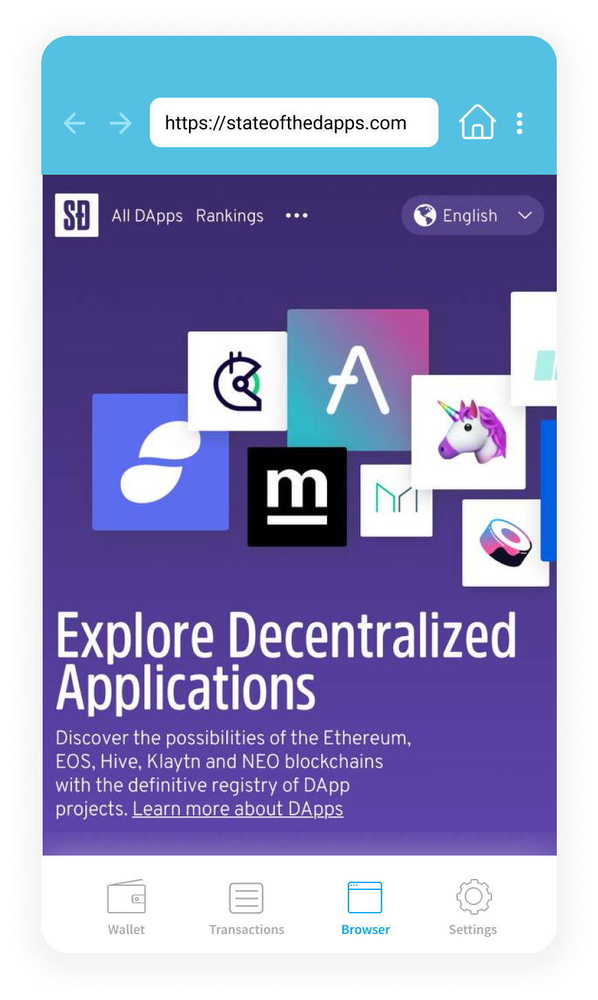
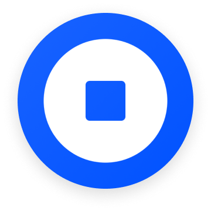

Every time we interact over the Internet, copies of our data get sent to the server of a service provider, and every time that happens, we lose control over our data.
About AlphaWallet
AlphaWallet is an open-sourced, non-custodial cryptocurrency wallet. We enable users to interact directly with blockchain-powered applications and services.
In August 2018, AlphaWallet implemented an in-app decentralised browser for fast and linear transactions on the blockchain. A month after implementation, user engagement rate stagnated indicating that the decentralised browser is not helping users to fulfil their crypto transactions.
We believe that our existing browser lacks clear and effective call-to-actions to help users navigate the decentralised web.

Currently, the browser's start-up page is a blockchain directory site called "State of the Dapps".
We hypothesised that by designing clear call-to-actions on the homepage, it would guide users to interact with decentralised applications on our browser and increase crypto transactions.
Increase installations and user engagement rate
Increase returning users
Educate new users on Ethereum and blockchain
I led the overall design process from start to finish. My responsibilities included:
Planning and executing user interviews and testing
Creating user flows and information architecture
Conducting a competitive audit
Building wireframes and prototypes
Guiding developers with the implementation of my designs
We recruited 4 participants for our user research and screened them to have least 1 to 2 years experience using blockchain apps and have never used AlphaWallet before.
User Interview: We asked our participants to share their experiences with blockchain apps and dapp browsers to uncover their wants and common pain points.
Our participants provided insight into what are their wants and frustrations when it comes to decentralised browsers.
Wants:
Buy and sell tokens through the dapp browser
Use their tokens to interact with dapps
Frustrations:
When a browser does not have an extensive dapp catalogue
When there is too much friction in onboarding and installation
User Testing: We had our participants perform tasks on our existing UI. During user testing, we observed that 3 out of 4 participants did not use the browser and instead toggled between different apps to fulfil their crypto transactions.
After the usability test, we asked the participants what were their struggles with our browser:
Our participants expected decentralised browsers to work the same way as the web and mobile browsers that we commonly use today.
We learned that our decentralised browser should conform to our users' existing mental model to ensure they have a smooth experience. New UX solutions should be introduced sparingly.
In 2018, our competitors — Toshi, Cipher and Trust — were leading the UX forefront of mobile decentralised browsers. I analysed their browsers to find out their strengths and weaknesses, and discover key opportunities to strategise our product.
All mobile browsers were tested on an iPhone 6.
 Toshi |
Cipher |
Trust |
|
|---|---|---|---|
| Features | • Built-in dapp library and search engine • Chat messenger to send and request payments from other Toshi users • Collectibles (NFTs) section |
• Built-in dapp library and search engine • Bookmark manager • "Get Started" page for newbies |
• Built-in search engine |
| User Experience | ✅ Dapp library is extensive ✅ Content easy to understand ❌ Bottom navigation isn't present when interacting with a dapp on the browser |
✅ Interface is informative without being too cluttered ✅ Lets you switch back and forth between browser and wallet balance seamlessly ✅ Makes you use Touch ID for signing data ✅ Bottom navigation is always present ❌ Dapp library is lacking in catalogue |
✅ Large call-to-actions ✅ Conversion to fiat is seamless ✅ Easy to toggle between different dapps ❌ Lacks a dapp library |
| Performance | Slow | Fast | Fast |
Users could not make any configurations to layout or content in our competitors' browser to meet their specific needs.
We strategised that empowering users with control to customise their browser experience could be a key differentiation strategy to outperform our competitors.
Together with the team, we prioritised which features to design and develop using an impact/effort matrix.
We prioritised the dapp library, bookmark manager and customise home screen because they are proven to be quick wins.
I explored two design options (Option A vs Option B) because we wanted to test our initial hypothesis.
Option A (Control): Whether a call-to-action would be effective for new users to get onboarded
Option B (Variable): If either a tab design OR floating action buttons would be seamless for users in terms of navigation.
After conducting an informal in-house usability test, we decided to go ahead with Option B (Variable).
There were 2 reasons why:
1. Option A only leads to information about what the decentralised web does instead of hand-holding the user how to use the browser.
2. Making a user tutorial requires planning a separate UX strategy. We plan to craft a UX strategy to make it less frictional new users in the next version.
Then, it was time to finalise the structure of the decentralised browser.
Once we got our MVP out, we quickly collected feedback from our Telegram group:
Hotfixes:
Users find it confusing to swap tokens through the browser
Users would like it if they are able to copy and paste a link into the address bar
Positives:
Users find the user interface clean and intuitive
Users are overwhelmingly satisfied with customising their browser experience
1 month after implementation, our Android dapp increased user installation by +294% and our iOS dapp increased user installation by +209%.
A challenge I faced was the amount of jargons in the blockchain community and decentralised applications. Some examples of these jargons are 'ERC-20' and 'ERC-721' which refers to fungible token and non-fungible token standards respectively.
I wanted to make Ethereum applications friendly towards new users so I cut away the jargons and designed the browser with inclusivity in mind.
Our user interviews lacked the data for me to formulate better insights into what users needed in decentralised browsers. On hindsight, I should have conducted a mass survey to complement the qualitative interviews.

A platform for people to voice support for nature and the future they envision.